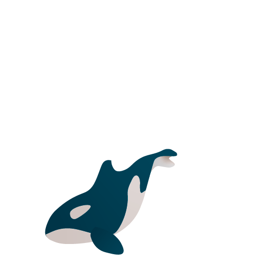

Orcinus Orca
Diet & Behavior
Orca whales have a vast, diverse diet that includes fish, penguins, and other marine
mammals like seals. To help them hunt, Orcas have 3–4 inch long interlocking teeth
that they use to grab prey. They also have the second largest brain among ocean
mammals, which allows them to outsmart most prey. Like most whales, they hunt in
pods, most Orcas working in teams of up to 40 individuals.
Popular Hunting Tactics
When hunting seals that are perched on ice floes, orcas charge the floe in a tight
formation to create a large wave that they propell with their tails by diving under the
ice floe. This results in the wave sweeping the seal off of the ice floe and into the water.
When hunting fish, orcas form groups to create a combination of air bubbles and
flashes of their belly to herd schools of fish into a tight ball near the surface of the
water. The whales then slap the ball with their tail which stuns the fish, making them
an easier target.

Threats
Killer whales are in deep trouble because of persistent chemical pollution in the
environment. A new study suggests the long-term viability of more than half of the
different orca groups around the globe is now in question. Some populations, such
as those around the UK, the Strait of Gibraltar, Brazil, Japan, and California, are
almost certainly doomed.
Pollution’s Role
Contaminants enter ocean waters and sediments from many sources, such as
wastewater treatment plants, sewer outfalls, and pesticide application. Once in the
environment, these substances move up the food chain and accumulate in top
predators. Killer whales accumulate these contaminants in their bodies because of
their long lifespan, position at the top of the food chain, and blubber stores.
The 1989 Exxon Valdez oil spill in Prince William Sound was strongly correlated with
the direct loss of individuals. However, oil spills can also have an indirect impact on
killer whales by impacting the abundance of prey species. In addition, the
bioaccumulation of certain pollutants such as PCBs in the food web can be seen in
apex predators like killer whales—and particularly among the transient population.
These pollutants can harm killer whales’ immune and reproductive systems. Despite
modern pollution controls, chemical contamination through the food chain continues
to threaten killer whales. These controls have reduced, but not eliminated, many
contaminants in the environment. Additionally, some of these contaminants persist in
the marine environment for decades and continue to threaten marine life.
Resident
Resident orcas are fish-specialists, named so because they tend to have small home
ranges around areas of large fish populations. Residents are found on both sides of
the North Pacific.
Resident orcas live in family groups within larger communities, divided by matrilines
and pods, and offspring live with their mother for their entire lives. These
communities are genetically and acoustically distinct from each other, and each has
unique traits specific to their group, like the beach-rubbing behaviour of the
Northern Residents.
Transient
Another North Pacific ecotype is Bigg’s, or transient, orcas. They live in small groups
and travel frequently over large home ranges, from Southern California up to the
Arctic Circle. Also very family-oriented, Bigg’s orcas live in smaller groups but form
close associations with their relatives, and some offspring stay with their mother
for life.
Transient orcas have been recorded by FEROP in the Western North Pacific, and
populations on both sides of the Pacific carry high loads of contaminants. As top
predators, these mammal-eating orcas accumulate pollutants that are transferred
through the food web and end up stored in the blubber of these whales.
Offshore
North Pacific Offshore killer whales were first discovered in 1979 when they were
spotted off Haida Gwaii. Their current known range spans between Southern
California and the Aleutian Islands. Due to their tendency to be far offshore and
wary of boats once found, little is known about this unique population of killer whales.
Social Structure
Killer whales are highly social and live in pods—large groups of whales that are seen
together over half the time. Individual whales tend to stay in their original pods. Pods
typically consist of two to 15 animals, but larger groups sometimes form for temporary
social interaction, mating, or seasonal availability of food. Pods differ in size due to
behavioral differences, the availability of food, and the number of whales living in a
given area.
Killer whales were once considered monotypic (belonging to one species). But many
biologists now believe that several populations, or even subspecies, of killer whales
exist. There are three main types of killer whales: Resident, Transient, and Offshore.
Each ecotype differs in appearance, diet, habitat, genetics, and behavior. While all
three types share at least part of their habitats, they are not known to interbreed with
each other.
Resident
Resident killer whales have rounded dorsal fins and a wide variety of “saddle” markings
on the patch behind their dorsal fins. They range from California to Russia and live in
large groups. Four populations of Resident killer whales occur in the Pacific Northwest.
Residents have a large repertoire of unique, identifiable calls, none of which are used
by transients. Their clear vocalizations and easily identifiable dorsal fins and saddle
patches have made them easy for scientists to study. Resident orcas are probably the
most well-researched group of orcas in the world.
Transient
Transient killer whales have straighter dorsal fins and only two types of saddle markings.
They live throughout the coastal waters of the Northwest in small groups.
Transient killer whales are slightly longer and heavier than Resident killer whales, but
this is hard to identify on the water. So scientists look for variation in the Dorsal Fins.
Transient orcas tend to have a sharply pointed tip to their dorsal fin whereas Residents
have a more rounded tip to theirs.
Offshore
Offshore killer whales have rounded fins and are generally smaller than the other types
of killer whales. They have the largest range and can occur up to 9 miles offshore.
Studies have allowed scientists to conclude that the North Pacific Offshore killer
whales are genetically more closely related to Resident killer whales than they are to
Bigg’s (Transient) killer whales. They are also more similar in appearance to Residents
than Bigg’s and have the tendency to vocalize frequently as seen in the fish eating
killer whales.